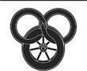

Çark Dokuyor
Thom Merrilin kendisini ağır adımlarla Üzüm Salkımı'na yürürken bulduğunda, sabahın ilk ışığı çoktan göğü inciye boyamıştı. Salon ve meyhanelerin en yoğun olduğu yerlerde bile, Önkapı'nın sessizliğe gömülüp nefesini tuttuğu kısa bir süre vardı. Thom, içinde bulunduğu ruh halinde, boş sokak alevler içinde bile olsa, fark edecek halde değildi.
Barthanes'in konuklarından bazıları, birçoğu gittikten ve Barthanes yattıktan çok sonra bile, onu alıkoymakta ısrar etmişlerdi. Bu kendi hatasıydı; Büyük Boru Avı'nı terk edip, köylerde anlattığı öykülere ve oralarda söylediği şarkılara geçmişti. Mara ile Üç Aptal Kral ve Susa, Uzakgezgini Jain'i Nasıl Ehlileştirdi ile Bilge Kurul Üyesi Anla hakkında öyküler. Bu seçimleri, kendince, insanların aptallıklarını belirtmek için yapmıştı, birinin bile ilgilenmek şöyle dursun, dinleyeceğini bile düşünmemişti. Bir anlamda ilgilenmişlerdi. Aynı türden başka şarkılar istemişler, ama yanlış yerlerde ve yanlış şeylere gülmüşlerdi. Besbelli, bunu fark etmeyeceğini veya cebe tıkılan dolu bir kesenin her türlü yarayı iyileştireceğini düşünerek ona da gülmüşlerdi. Keseyi o âna kadar iki kez atmasına ramak kalmıştı.
İçinde bulunduğu ruh halinin tek nedeni, cebini ve gururunu yakan ağır kese, hatta soyluların küçümseyişleri bile değildi. Rand hakkında, bir âşık parçası karşısında incelikli davranmaya bile gerek duymaksızın sorular sormuşlardı. Rand neden Cairhien'deydi? Neden bir Andorlu lord, onu, bir âşığı yana çekmişti? Çok fazla soru. Verdiği yanıtların yeterince zekice olduğundan emin değildi. Büyük Oyun'da refleksleri paslanmıştı.
Üzüm Salkımı'na dönmeden önce, Büyük Ağaç'a uğramıştı; bir iki avuca gümüş sıkıştırınca, herhangi birinin Cairhien'de nerede kaldığını öğrenmek zor değildi. Ne söylemeye niyetlendiğini hâlâ bilmiyordu. Rand, arkadaşlarıyla ve Aes Sedai'yle birlikte ayrılmıştı. Bu ona, bir şeyi yarım bıraktığı duygusunu veriyordu. Çocuk artık tek başına. Kavrulayım, ben bu işte artık yokum!
Nadiren o andaki gibi boş olan salondan uzun adımlarla geçti ve merdivenleri ikişer ikişer çıktı. En azından öyle yapmaya çalıştı; sağ bacağı iyi bükülmüyordu ve az kalsın düşecekti. Kendi kendine mırıldanarak yolun geri kalan kısmını daha ağır bir tempoyla çıktı ve Dena'yı uyandırmamak için odasının kapısını usulca açtı.
Dena'yı hâlâ elbisesini çıkarmamış halde, başı duvara dönük olarak yatakta yatarken görünce elinde olmadan gülümsedi. Beni beklerken uyuyakalmış. Aptal kız. Fakat bu sevgi dolu bir düşünceydi; kızın yaptığı ne olursa olsun, onu affedebileceğini düşünüyordu. Hemen oracıkta o gece kızın ilk kez gösteri yapmasına izin vermeye karar vererek, harpının kılıfını yere bıraktı ve kızı uyandırıp söylemek için bir elini Dena'nın omzuna koydu.
Dena'nın cansız bedeni sırt üstü dönüp, cam gibi irileşmiş gözleri boğazındaki kesiğin üzerinden ona baktı. Yatağın, kızın bedeniyle gizlenen tarafı, karanlık ve kanla sırılsıklam bir haldeydi.
Thom'un midesi ağzına geldi; boğazı nefes alamayacak kadar gergin olmasaydı, kusar, çığlık atar ya da ikisini birden yapardı.
Aldığı tek uyarı, gardırop kapılarının gıcırdaması oldu. Dönerek kol yenlerinden bıçaklarını çıkarıp aynı hareketle fırlatarak savurdu. İlk bıçak, elinde bir hançer tutan, şişman, kelleşmeye yüz tutmuş bir adamın boğazına saplandı; adam sendeleyerek geriledi ve çığlık atmaya çalışırken, bıçağı kavrayan parmaklarının etrafında kan kabarcıklandı.
Ancak sakat bacağının üzerinde döndüğünden, Thom'un diğer bıçağı hedefini bulmamıştı; bıçak yüzünde yara izleri olan ve diğer gardıroptan çıkmakta olan, kaslı bir adamın sağ omzuna saplandı. İriyarı adamın bıçağı, kendisine itaat etmeyen elinden birdenbire düştü ve adam hantal adımlarla kapıya doğru yürüdü.
Daha ikinci bir adım atamadan, Thom başka bir bıçak çıkardı ve adamın bıçağının arka tarafına bir yarık açtı. İriyarı adam bağırıp tökezledi ve Thom, adamı yağlı saçlarından kavrayıp suratını kapının yanındaki duvara vurdu; omzundan çıkan bıçak kabzası duvara vurunca adam tekrar çığlık attı.
Thom, elindeki bıçağı adamın kara gözünün iki santim uzağına uzattı. İri adamın yüzündeki yara izleri ona sert bir ifade veriyordu, ama bıçağın ucuna gözlerini kırpmadan baktı ve tek kasını bile hareket ettirmedi. Gövdesinin yarısı gardıropta olduğu halde yatan şişman adam son bir tekme vurup hareketsiz kaldı.
"Seni öldürmeden önce," dedi Thom, "söyle bana. Neden?" Sesi alçak ve uyuşuk çıkıyordu, kendisini uyuşmuş hissediyordu.
"Büyük Oyun," dedi adam çabucak. Aksanı ve giysileri sokaklarda konuşulan cinstendi, ama biraz fazla kaliteli, biraz az yıpranmışlardı; herhangi bir Önkapılı'nın sahip olmaması gerektiği kadar parası vardı. "Sana karşı şahsi bir şey yok, anlıyorsun ya. Sadece Oyun."
"Oyun mu? Ben Daes Dae'mar'a karışmış değilim! Neden beni Büyük Oyun için öldürmek isteyesin ki?" Adam tereddüt etti. Thom bıçağını biraz daha yaklaştırdı. Adam gözlerini kırpsa, kirpikleri bıçağın ucuna değecekti. "Kim?"
Adam boğuk bir sesle, "Barthanes," diye cevap verdi. "Lord Barthanes. Seni öldürmeyecektik. Barthanes bilgi istiyor. Sadece ne bildiğini öğrenmek istedik. Bu işten altın kazanabilirsin. Bildiklerin karşılığında, güzel, iri bir kron. Belki iki."
"Yalancı! Dün gece Barthanes'in malikanesinde, sana şimdi ne kadar yakınsam, ona da bu kadar yakındım. Benden bir şey isteseydi, oradan asla sağ çıkamazdım."
"Sana söylüyorum, günlerdir, seni ya da bu Andorlu lordu tanıyan herhangi birini arıyoruz. Dün gece aşağıda duyana kadar ismini hiç duymamıştım. Lord Barthanes'in eli açıktır. Beş kron olabilir."
Adam, başını Thom'un elindeki bıçaktan çekerek uzaklaştırmaya çalıştı ve Thom onu duvara daha fazla itti. "Hangi Andorlu lord?" Ama hangisi olduğunu biliyordu. Işık ona yardım etsin, biliyordu.
"Rand. Al'Thor Hanedanı'ndan. Genç. Bir kılıçustası, en azından kılıcı taşıyor. Seni görmeye geldiğini biliyorum. Onunla Ogier geldi ve konuştunuz. Bana bildiklerini anlat. Kendim bile bir iki kron ekleyebilirim."
"Seni ahmak," diye soludu Thom. Dena bunun için mi öldü? Ah, Işık adına, o öldü. İçinden ağlamak geliyordu. "Çocuk bir çoban." Süslü bir ceket içinde, etrafında bala gelen anlar gibi Aes Sedailerin dolaştığı bir çoban. "Sadece bir çoban." Adamın saçlarına daha sıkı yapıştı.
"Bekle! Bekle! Beş krondan fazla, hatta on kron kazanabilirsin. Daha doğrusu yüz kron. Her Hanedan, bu Rand Al'Thor hakkında bilgi almak istiyor. İki üç tanesi bana yanaştı. Senin bilgin, benim de bilgiyi edinmek isteyenler hakkındaki malumatım sayesinde, ikimiz de ceplerimizi doldurabiliriz. Üstelik, onu en az bir kez soran bir kadın, bir leydi gördüm. Onun kim olduğunu öğrenebilirsek... eh, o bilgiyi de satabiliriz."
"Bütün bunlar içinde tek bir gerçek hata yaptın," dedi Thom.
"Hata mı?" Adamın uzaktaki eli kemerine doğru kaymaya başlamıştı. Şüphesiz orada başka bir hançeri vardı. Thom bunu görmezden geldi.
"Kıza asla dokunmaman gerekirdi."
Adamın eli kemerine fırladı, sonra Thom'un bıçağı hedefini bulurken tek bir kez kasıldı.
Thom, onu kapıdan uzağa bıraktı ve yorgunlukla eğilip bıçaklarını çıkarmadan önce bir an bekledi. Kapı gürültüyle açıldı ve yüzünde bir hırlamayla döndü.
Zera bir eli boğazında, geriye çekildi. "O salak Ella bana az önce," dedi titreyen bir sesle, "Barthanes'in adamlarından iki tanesinin dün gece seni sorduğunu söyledi ve bu sabah duyduklarıma göre... Oyun'u artık oynamadığını söylediğini, sanıyordum."
"Beni buldular," dedi Thom bitkinlikle.
Zera'nın gözleri Thom'un yüzünden aşağılara indi ve iki adamın cesedini görünce irileşti. Aceleyle odaya adım atarak kapıyı arkasından kapadı. "Bu kötü, Thom. Cairhien'den ayrılman gerekecek." Gözleri yatağa ilişti ve nefesi kesildi. "Ah, hayır. Ah, hayır. Ah, Thom, o kadar üzgünüm ki..."
"Henüz gidemem, Zera." Biraz durduktan sonra sevecen bir hareketle Dena'nın üzerine bir battaniye çekerek yüzünü örttü. "Önce öldürmem gereken bir adam daha var."
Hancı kendisini şöyle bir sarstı ve gözlerini yataktan aldı. Sesi hayli boğuktu. "Barthanes'i kastediyorsan, geç kaldın. Herkes daha şimdiden bundan bahsediyor. O öldü. Uşakları onu bu sabah bulmuş, yatak odasında lime lime edilmiş. Onu ancak şöminenin üzerindeki bir sırığa takılı kafasından tanımışlar." Kadın bir elini Thom'un koluna koydu. "Thom, dün gece orada olduğunu, bilmek isteyen kimseden saklayamazsın. Üzerine bir de bu ikisini katarsan Cairhien'de bu işe karışmadığına inanacak kimse kalmaz." Son sözlerinde, kendisinin de kuşkuları varmış gibi sorgulayıcı bir ton vardı.
"Sanırım bunun bir önemi yok," dedi Thom donuk bir sesle. Kendini yatağın üzerindeki battaniyelerle örtülü şekle bakmaktan alıkoyamıyordu. "Belki Andor'a dönerim. Caemlyn'e."
Kadın, Thom'un omuzlarını tutarak onu yataktan öteye çevirdi. "Siz erkekler," diye içini çekti, "her zaman ya kaslarınızla ya yüreklerinizle düşünürsünüz, asla beyinlerinizle değil. Caemlyn de senin için Cairhien kadar kötü. İki yerde de sonunda ya ölür ya da hapse düşersin. Sence Dena bunu ister miydi? Anısına saygı göstermek istiyorsan, hayatta kal."
"Sen onunla ilgilenir misin..." Onu söyleyemedi. Yaşlanıyorum, diye düşündü. Yumuşuyorum. Ağır keseyi cebinden çıkardı ve kadının ellerini kesenin etrafında kapattı. "Bu... her şeyin hesabını görür. Benim hakkımda sorular sormaya başladıklarında da yardımı olur."
Kadın usulca, "Ben her şeyle ilgilenirim," dedi. "Gitmen gerek, Thom. Şimdi."
Thom gönülsüzce başını salladı ve yavaşça, birkaç eşyasını eyer torbalarına tıkmaya başladı. O çalışırken Zera ilk defa kısmen gardıropta gizlenmiş adama alıcı gözüyle bir bakış atıp yüksek sesle nefesini tuttu. Thom ona soran gözlerle baktı; onu tanıdı tanıyalı, kadın hiçbir zaman kan görünce bayılan cinsten biri olmamıştı.
"Bunlar Barthanes'in adamları değil, Thom. En azından oradaki değil." Başıyla şişman adamı işaret etti. "Cairhien'de en kötü saklanan sır onun Riatin Hanedanı hesabına çalıştığıdır. Galldrian hesabına."
"Galldrian," dedi Thom heyecansız bir sesle. O kahrolası çoban beni ne tür bir işin içine soktu? Aes Sedailer ikimizi de ne türlü bir işin içine soktu? Ama onu öldüren, Galldrian'in adamlarıydı.
Düşünceleri bir ölçüde yüzüne yansımış olmalıydı. Zera sert bir sesle, "Dena senin sağ olmanı istiyor, seni ahmak! Kral'ı öldürmeye çalışırsan, yüz karış yakınına gelmeden öldürülürsün; o kadarını başarırsan tabiî!"
Şehir surlarından, Cairhien'in yarısı bağırıyormuş gibi bir kükreyiş yükseldi. Thom kaşlarını çatarak penceresinden dışarı baktı. Önkapı'nın çatılarının üzerindeki gri surların ardında, kalın bir duman bulutu yükseliyordu. Duvarların çok ilerisinde, ilk kara sütunun yanında, birkaç gri duman tutamı çabucak ikinci bir siyah sütuna dönüştü ve daha ileride yeni tutamlar belirdi. Thom uzaklığı tahmin etti ve derin bir nefes aldı.
"Belki sen de gitmeyi planlasan iyi olacak. Görünüşe bakılırsa birileri tahıl ambarlarını ateşe veriyor."
"Daha önce de ayaklanmaları yaşamıştım. Şimdi git, Thom." Thom, Dena'nın örtülü bedenine son bir bakış atarak eşyalarını topladı, ama o gitmeye davranırken Zera tekrar konuştu. "Gözlerinde tehlikeli bir bakış var, Thom Merrilin. Dena'nın burada sağ salim oturduğunu düşünsene. Ne düşüneceğini bir tahmin et! Senin gidip kendini yok yere öldürtmene izin verir miydi?"
"Ben sadece ihtiyar bir âşığım," dedi Thom kapıdan. Rand Al'Thor da sadece bir çoban, ama ikimiz de yapmamız gerekeni yapıyoruz. "Kimin için bir tehlike arz edebilirim ki?"
Kapıyı kendine doğru çekip onu ve Dena'yı gizlediğinde, yüzüne neşesiz, solucanımsı bir sırıtış yayıldı. Bacağı ağrıyordu, ama kararlılıkla merdivenlerden inip handan çıkarken onu hissetmedi bile.
* * *
Padan Fain, Falme'nin üzerindeki bir tepede, kasabanın dışındaki tepelerde kalan az sayıda ve seyrek fundalıklardan birinin içinde atının dizginlerini çekti. Kıymetli yükünü taşıyan yük atı bacağına toslayınca, hiç bakmadan atın kaburgalarına bir tekme attı; hayvan bir homurtuyla Fain'in eyerine bağladığı ipin ucuna doğru çekildi. Kadın, atından vazgeçmek istememişti; onun peşinden gelen Karanlıkdostlarının hiçbirinin Fain'in koruması olmadan Trolloclarla yalnız kalmak istememesi gibi. İki sorunu da kolaylıkla çözmüştü. Bir Trolloc tenceresindeki etin ata ihtiyacı olmazdı. Kadının yoldaşları Yollar'da yapılan, Tümentepe'de uzun zaman önce terk edilmiş bir yurtta bulunan Yolkapısı'na kadarki yolculuk yüzünden sarsılmışlardı ve Trollocların yemeklerini hazırlamasını izlemek, hayatta kalan Karanlıkdostlarının fazlasıyla emir almaya müsait hale gelmesine neden olmuştu.
Fain ağaçların kenarından sursuz kasabayı inceleyip burun kıvırdı. Bir kısa ticaret katırı şehrin sınırında bulunan ahırlar, at arazileri ve araba avluları arasından gürültüyle ilerliyor, buna benzer araçlar tarafından yıllarca ezilerek sıkışmış topraktan fazla toz kaldırmıyordu. Arabaları süren adamlar ile adamların yanlarında giden az sayıda kişi, giysilerine bakılırsa, civar halkındandı, ancak en azından atlıların kılıç kayışlarında kılıçları, hatta birkaçının mızrağı veya yayı vardı. Gördüğü askerler, ki sayıları azdı, fethetmiş oldukları söylenen silahlı adamları izler gibi değildi.
Bu insanlar, Seanchanlar hakkında, Tümentepe'de geçirdiği bir gün bir gece içinde biraz bilgi edinmişti. En azından yenilen halkın bildiği kadarını. Birini yalnız yakalamak asla zor olmuyordu ve doğru bir şekilde ifade edilen sorular her zaman yanıtlanıyordu. Adamlar istilacılar hakkında, bir gün bildikleriyle bir şeyler yapacakları varmış gibi, daha fazla bilgi topluyor, fakat bazen bildiklerini saklamaya çalışıyorlardı. Kadınlar genellikle hükümdarları kim olursa olsun yaşamlarını sürdürmekle ilgileniyor gibi görünmelerine rağmen, erkeklerin fark etmediği ayrıntıları yakalıyor ve çığlık atmayı kestikten sonra daha çabuk konuşuyorlardı. En çabuk konuşan çocuklardı, ama işe yarar bir şey söyledikleri nadirdi.
Duyduğu şeylerin üçte birine, birer saçmalık ve masallara dönüşmekte olan söylentiler olduğunu düşünerek inanmadı, ama artık, vardığı bu hükümlerden bazılarını geri alıyordu. Görünüşe göre herkes Falme'ye girebiliyordu. Yirmi asker şehirden atla çıkarken bir "saçmalığın" daha gerçek olduğunu gördü. Adamların bineklerini açıkça seçemiyordu, ama at olmadıkları belliydi. Akıcı bir zerafetle koşuyorlardı ve koyu derileri sabah güneşinde, pullarla kaplıymış gibi parlıyordu. İç bölgelerde kaybolmalarını izlemek için boynunu uzattıktan sonra, atını şehre doğru topukladı.
Ahırlar ile park halindeki arabalar ve çitlerle çevrili at arazilerinin arasındaki yerli halk, ona fazla dikkat etmiyor, arada bir şöyle bir bakmakla yetiniyordu. O da onlarla hiç ilgilenmiyordu; atını şehre, şehrin limana inen taş döşeli sokaklarına sürdü. Limanı ve oraya demirli tuhaf şekilli Seanchan gemilerini görebiliyordu. Ne kalabalık, ne de boş sayılabilecek sokakları ararken kimse onu rahatsız etmedi. Halk, bakışlarını yerden ayırmadan işine gücüne koşuyor, ne zaman yanlarından askerler geçse eğilerek selam veriyorlardı, fakat Seanchanlıların onlara kulak astığı yoktu. Sokaktaki zırhlı Seanchanlara ve limanda demirli gemilere rağmen görünürde her şey sütliman gibiydi, ama Fain alttan alta hüküm süren gerginliği hissedebiliyordu. İnsanların gergin ve korkulu olduğu yerlerde her zaman işini iyi yapardı.
Önünde en az bir düzine askerin nöbet tuttuğu geniş bir eve geldi. Fain durup atından indi. Subay olduğu belli birinin dışında, çoğu düz siyah renkte zırhlar giymişti ve miğferleri ona çekirge kafalarını hatırlatıyordu. Ön kapının iki tarafına üç gözü ve boynuzumsu gagaları olan iki sert derili hayvan, kurbağalar gibi çömelmişti; yaratıkların yanında duran iki askerin de zırhının göğsüne boyayla üç göz yapılmıştı. Fain, çatının üzerinde dalgalanan, mavi kenarlı, üzerinde elinde yıldırımlar tutan kanatlarını açmış şahin armalı bayrağa baktı ve içinden kıkır kıkır güldü.
Kadınlar sokağın karşı tarafındaki bir eve girip çıkıyordu ve birbirlerine gümüş yularlarla bağlıydı, ama Fain onlara kulak asmadı. Köylülerden damane'leri öğrenmişti. Daha sonra bir işe yarayabilirlerdi, ama şimdi değil.
Askerler ona bakıyordu, özellikle de zırhı bütünüyle altın, kırmızı ve yeşil renklerde olan subay.
Fain yüzüne zorla yağcı bir gülümseme yerleştirip yerlere kadar eğilerek selam verdi. "Lordlarım, elimde Yüce Lordunuzun ilgisini çekecek bir şey var. Sizi temin ederim, onu ve beni bizzat görmek isteyecektir." Yük atının üzerindeki, hâlâ adamlarının onu bulduğu zamanki dev, çizgili battaniyeye sanlı duran karemsi şekli işaret etti.
Subay onu baştan aşağı süzdü. "Bu topraklara yabancı gibi konuşuyorsun. Yeminleri ettin mi?"
"İtaat ediyor, bekliyor ve hizmet ediyorum," diye yanıt verdi Fain hiç teklemeden. Sorguladığı herkes yeminlerden bahsediyordu, ancak kimse bunların ne anlama geldiğini anlamamıştı. Bu insanların istediği yeminse, her şeye yemin etmeye hazırdı. Uzun zaman önce, ettiği yeminlerin sayısını şaşırmıştı.
Subay, adamlarından ikisini bir işaretle battaniyenin altında ne olduğuna bakmaya gönderdi. Yük eyerinden indirdiği sıradaki şaşkınlık dolu homurtuları, battaniyeyi çekip almalarıyla birlikte şaşkınlık dolu solumalara dönüştü. Subay önce ifadesiz bir yüzle parke taşlarında duran, gümüş işli altın sandığa, sonra da Fain'e baktı. "Bizzat İmparatoriçe'ye yaraşır bir armağan. Benimle geleceksin."
Askerlerden biri Fain'in üzerini etraflıca aradı, ama Fain aramaya sesini çıkarmadan katlanırken, subay ile sandığı yerden kaldıran askerin içeri girerken kılıç ve hançerlerini çıkardıklarına dikkat etti. Daha şimdiden planından emin olsa da, bu insanlar hakkında öğrenebileceği her şeyin, ne kadar ufak olursa olsun, yardımı olabilirdi. O her zaman kendinden emindi, ama asla, lordların kendilerini izleyenlerden biri arasından çıkan bir katilin bıçağından korktuğu zamankinden fazla değil.
Kapıdan geçerlerken subay ona kaşlarını çatarak baktı ve Fain bir an bunun nedenini merak etti. Elbette. Hayvanlar. Her ne iseler, kesinlikle Trolloclardan beter olamazlardı; bir Myrddraal'le aşık atamazlardı ve onlara dönüp ikinci kez bakmamıştı. Fakat onlardan korkmuş rolü yapmak için çok geçti. Ama Seanchan hiçbir şey söylemedi ve onu evin içlerine götürdü.
Böylece Fain kendisini, duvarlarını gizleyen paravanlar dışında mobilyasız bir odada yüzü yere bakar halde buldu ve subay burada Yüce Lord Turak'a ondan ve sunduğu armağandan bahsetti. Hizmetkârlar sandığın Yüce Lord'un eğilmeden bakmasına imkân verecek şekilde üzerine yerleştirileceği bir masa getirdiler; Fain, hizmetkârların yalnızca aceleyle oradan oraya koşan terlikli ayaklarını gördü. Sabırsızlıkla zamanını bekledi. Eninde sonunda, eğilecek kişinin o olmadığı bir zaman gelecekti.
Derken askerler gönderildi ve Fain'e ayağa kalkması söylendi. Bunu yavaşça, hem tıraşlı kafası, uzun tırnakları ve çiçek brokarlı mavi ipek cüppesiyle Yüce Lord'u, hem de onun yanında duran, kafasının tıraşlanmamış tarafındaki soluk renkli saçlar uzun bir belik halinde örülmüş adamı inceleyerek yaptı. Fain, yeşilli adamın, ne kadar yüksek seviyeli de olsa, sadece bir hizmetkâr olduğuna emindi, ama hizmetkârlar yararlı olabilirdi, özellikle de efendilerinin gözünde yüksek bir mevkide iseler.
"Olağanüstü bir armağan." Turak'ın gözleri sandıktan Fain'e döndü. Yüce Lord'dan gül kokuları yükseliyordu. "Yine de soru kendi kendisini soruyor; senin gibi biri nasıl oldu da daha küçük pek çok lordun satın alamayacağı bir sandığı ele geçirdi? Sen bir hırsız mısın?"
Fain, yıpranmış, hiç de temiz olmayan ceketini çekiştirdi. "Zaman zaman bir adamın olduğundan az görünmesi gerekli olabilir, Yüce Lordum. Hâlihazırdaki hırpani kılığım, bunu size rahatsız edilmeden getirmeme imkân verdi. Bu sandık eskidir, Yüce Lordum -Efsaneler Çağı kadar eski- ve içinde çok az gözün gördüğü bir hazine yatmaktadır. Yakında -çok yakında, Yüce Lordum- onu açabilecek ve size bu toprakları istediğiniz yere, Dünyanın Omurgası'na, Aiel Kıraçları'na, ötesindeki topraklara kadar almanıza imkân verecek olan şeyi sunacağım. Karşınızda kimse duramayacak, Lordum, ben-" Turak, uzun tırnaklı parmaklarını sandığın üzerinden geçirmeye başlayınca durdu.
"Buna benzer sandıklar, Efsaneler Çağı'ndan kalma sandıklar görmüştüm," dedi Yüce Lord, "ama hiçbiri bunun kadar güzel değildi. Yalnızca deseni bilenler tarafından açılacak şekilde tasarlanmışlardır, ama ben -ah!" Karmaşık yaprak şekillerinin ve kabartma süslerin arasında bir yeri eliyle bastırdı, keskin bir tıklama oldu ve kapağı kaldırdı. Yüzünden, hayal kırıklığı olarak yorumlanabilecek bir ifade geçti.
Fain hırlamamak için, yanağının içini kanayana kadar ısırdı. Sandığı açanın kendisi olmaması pazarlık konusunda elini zayıflatıyordu. Yine de, kendisini sabırlı olmaya zorlayabilirse, diğer her şey planladığı gibi gidebilirdi. Ama o kadar uzun zaman sabretmişti ki...
"Bunlar Efsaneler Çağı'ndan kalma hazineler mi?" dedi Turak bir eliyle kıvrık Boru'yu, diğeriyle de altın kabzasına bir yakut kakılmış hançeri çıkararak. Fain hançeri kavramamak için ellerini yanlarında yumruk yaptı. "Efsaneler Çağı," diye yineledi Turak usulca, hançerin ucuyla Boru'nun altın çanının etrafına işlenmiş gümüş yazıyı izleyerek. Kaşları hayretle kalktı. Bu, Fain'in onda gördüğü ilk açık ifadeydi, ama bir sonraki an Turak'ın yüzü her zamanki kadar sakindi. "Bunun ne olduğu konusunda herhangi bir fikrin var mı?"
"Valere Borusu, Yüce Lordum," dedi Fain sakince ve saç örgülü adamın ağzının açık kaldığını görerek memnun oldu. Turak adeta kendi kendisine kafa salladı.
Yüce Lord öteye döndü. Fain gözlerini kırptı ve ağzını açtı, sonra sarı saçlı adamın sert bir hareketi üzerine, konuşmadan onu izledi.
Tüm özgün mobilyaları gitmiş, yerine paravanlar ve uzun ve yuvarlak bir dolabın karşısında tek bir koltuk yerleştirilmiş başka bir odadaydılar. Boru'yu ve hançeri hâlâ elinde tutan Turak önce dolaba baktı, sonra yüzünü çevirdi. Hiçbir şey söylemedi, ama diğer Seanchan hızla emirler verdi ve birkaç saniye içinde, yünlü, yalın cüppeler içinde adamlar paravanların arkasındaki bir kapıdan, ellerinde diğer bir küçük masayla birlikte çıktılar. Arkalarından saçı beyaz denilecek kadar sarı, genç bir kadın geliyordu; kolları çeşitli boy ve çeşitlerde cilalı tahtadan ufak kaidelerle doluydu. Giysisi beyaz ipektendi ve o kadar inceydi ki, Fain giysinin içinden kızın gövdesini açıkça görebiliyordu, ancak tek ilgilendiği hançerdi. Boru bir amaca hizmet eden bir araçtı, ama hançer Fain'in bir parçasıydı.
Turak, kızın elindeki ahşap kaidelerden birine hafifçe dokundu ve kız kaideyi masanın ortasına bıraktı. Adamlar örgülü adamın talimatları doğrultusunda koltuğu ona bakacak şekilde döndürdüler. Daha alt kademeden hizmetkârların saçları omuzlarına dökülüyordu. Neredeyse başlarını dizlerine değdirerek selam verdikten sonra aceleyle dışarı çıktılar.
Turak Boru'yu kaideye dik duracak şekilde yerleştirdikten sonra, hançeri de Boru'nun önünde, masaya koyup koltuğa oturdu.
Fain artık dayanamadı. Hançere uzandı.
Sarı saçlı adam Fain'in bileğini kıracak kadar güçlü bir kavrayışla yakaladı. "Tıraşsız köpek! Bil ki, Yüce Lord'un malına dokunan, el kesilir."
"O bana ait," diye hırladı Fain. Sabırla. O kadar uzun sürdü ki...
Koltukta arkasına yaslanan Turak, mavi cilalı tırnaklarından birini kaldırdı ve Fain aradan çekilerek Yüce Lord'un Boru'yu rahatça görmesi sağlandı.
"Sana mı ait?" dedi gürledi. "Açamadığın bir sandığın içinde mi? Yeteri kadar ilgimi çekersen, sana hançeri verebilirim. Efsaneler Çağı'ndan kalmış bile olsa, onun gibi bir şeyle ilgilenmem. Her şeyden önce, bir soruma cevap vereceksin. Neden Valere Borusu'nu bana getirdin?"
Fain hançeri bir saniye daha özlemle süzdükten sonra, bileğini çekerek kurtardı ve ovalayarak eğilip selam verdi. "Üfleyebilmeniz için, Yüce Lord. Dilerseniz ondan sonra bu ülkenin tamamını alabilirsiniz. Dünyanın tamamını. Beyaz Kule'yi parçalayıp Aes Sedailer'i tuzla buz edebilirsiniz, zira onların gücü bile ölümden dönen kahramanları durdurmaya yetmez."
"Onu ben üfleyeceğim." Turak'ın ses tonu ifadesizdi. "Ve Beyaz Kule'yi parçalayacağım. Bir kez daha soruyorum, neden? İtaat edip bekleyeceğini ve hizmet edeceğini iddia ediyorsun, ama bu topraklar yemininden dönenlerle dolu. Neden ülkeni bana veriyorsun? Bu... kadınlarla şahsi bir anlaşmazlığın mı var?"
Fain sesinin ikna edici çıkmasına çalıştı. İçeriden yolunu kazan bir solucan gibi sabırlı. "Yüce Lordum, benim ailemde kuşaktan kuşağa aktarılan bir gelenek vardır. Bizler Yüce Kral Artur Paendrag Tanreall'a hizmet ettik ve o Tar Valon cadıları tarafından katledildiğinde, yeminlerimizi terk etmedik. Başkaları savaşa tutuşup Şahinkanadı Artur'un yaptıklarını paramparça ederken, bizler yeminlerimize sadık kaldık ve bunun yüzünden eziyet görmemize rağmen, yeminimizden dönmedik. Bu bizim geleneğimizdir, Yüce Lordum; bu gelenek babadan oğula, anneden kıza aktarılmıştır, Yüce Kral'ın katledilişinin üzerinden geçen onca yıl boyunca. Şahinkanadı Artur'un Aryth Okyanusu'nun ötesine gönderdiği orduların dönüşünü beklediğimiz, Şahinkanadı Artur'un soyunun geri dönüp Beyaz Kule'yi yok etmesini ve Yüce Kral'a ait olanları geri almasını beklediğimiz onca yıl boyunca sürdürdüğümüz bir gelenek. Şahinkanadı'nın soyu geri döndüğünde de, Yüce Kral'a yaptığımız gibi, hizmet edecek ve akıl danışacağız. Yüce Lordum, kenarı dışında, bu çatının üzerinde dalgalanan sancak Artur Paendrag Tanreall'ın ordularıyla birlikte okyanusun ötesine gönderdiği oğlu Luthair'in sancağıdır." Fain, dizlerinin üzerine çökerek iyi bir huşuyla dolu insan taklidi yaptı. "Yüce Lordum, tek istediğim Yüce Kral'ın soyuna hizmet etmek ve ona fikir vermek."
Turak o kadar uzun süre sustu ki, Fain onun daha fazla ikna edilmeye ihtiyacı olup olmadığını merak etmeye başladı; işi gerektiği kadar ileri götürebilirdi. Fakat nihayet Yüce Lord konuştu. "Bu topraklara ayak bastığımızdan beri kimsenin, ne yüksek ne aşağı kademedekilerin ağzına almadığı şeyleri bilir gibisin. Buradaki insanlar bundan sadece diğer söylentilerden biriymiş gibi bahsediyor, ama sen biliyorsun. Bunu gözlerinde görüyor, sesinde duyuyorum. Neredeyse beni bir tuzağa düşürmek için gönderildiğini düşüneceğim. Ama Valere Borusu'nu elinde tutan kim onu bu şekilde kullanır ki? Soy'dan Hailene ile gelenler arasından kimse Boru'yu elinde bulunduramazdı, zira efsane onun bu ülkede gizlendiğini söylüyor. Bu ülkedeki herhangi bir lord da onu benim ellerime teslim etmektense bana karşı kullanmayı tercih ederdi. Valere Borusu eline nasıl geçti? Sen de efsanedeki gibi bir kahraman olduğunu mu iddia ediyorsun? Kahramanca işler mi yaptın?"
"Ben kahraman değilim, Yüce Lordum." Fain kendini küçümseyen bir gülümsemeye kalkıştı, ama Turak'ın yüzünde bir değişiklik olmayınca bundan vazgeçti. "Boru, Yüce Kral'ın ölümünü izleyen karmaşa sırasında atalarımdan biri tarafından bulundu. Sandığı nasıl açacağını biliyordu, ama bu sır, Şahinkanadı Artur'un imparatorluğunu parçalayan Yüzyıl Savaşı'nda onunla birlikte öldü ve onu izleyen bizler, Boru'nun sandığın içinde olduğunu ve Yüce Kral'ın soyu geri dönene dek onu güven içinde saklamamız gerektiğini biliyorduk."
"Sana neredeyse inanacağım."
"İnanın, Yüce Lordum. Siz Boru'yu üfledikten sonra-"
"Beni ikna ettiğin kadarını da mahvetme. Valere Borusu'nu ben üflemeyeceğim. Seanchan'a döndüğümde, onu ganimetlerimin en büyüğü olarak İmparatoriçe'ye sunacağım. Belki İmparatoriçe onu kendisi üfler."
"Ama, Yüce Lordum," diye itiraz etti, "buna mecbursu-" Kendisini yerde yan yatar halde buldu, kafası zonkluyordu. Ancak gözleri açıldığında sarı örgülü adamın parmaklarını ovuşturduğunu gördü ve ne olduğunu anladı.
"Bazı sözcükler," dedi adam alçak sesle, "asla Yüce Lord'a karşı kullanılmaz."
Fain adamın nasıl öleceğine karar verdi.
Turak hiçbir şey görmemiş gibi sakin bir ifadeyle gözlerini Fain'den Boru'ya çevirdi. "Belki seni de Valere Borusu'yla birlikte İmparatoriçe'ye veririm. Diğer herkes yeminlerinden dönmüş ya da yeminlerini unutmuşken, ailesinin onlara sadık olduğunu iddia eden bir adamsın. Seni eğlendirici bulabilir."
Fain, hissettiği ani sevinci doğrulma hareketiyle gizledi. Turak bahsedene kadar bir İmparatoriçe'nin varlığından bile emin değildi, ama tekrar bir hükümdarı kullanabilme... bu yeni yollar, yeni planlar açıyordu. Seanchanlıların kudretine egemen ve ellerinde Valere Borusu'nu tutan bir hükümdarı kullanabilme. Bu Turak'ı Yüce Kral yapmaktan çok daha iyiydi. Planının bazı bölümlerinin gerçekleşmesi için bekleyebilirdi. Yavaşça. Onu ne kadar istediğini anlamasına izin verme. Bunca zamandan sonra, biraz daha sabretmenin zararı olamaz. "Yüce Lord nasıl isterse," dedi sesini yalnızca hizmet etmek isteyen bir adam gibi çıkarmaya çalışarak.
"Neredeyse hevesli bir halin var," dedi Turak ve Fain az kalsın yüzünü buruşturacaktı. "Sana Valere Borusu'nu neden üflemeyeceğimi, hatta elimde bile tutmayacağımı açıklayayım, belki bu hevesini giderir. Benim verdiğim bir armağanın İmparatoriçe'yi gücendirmesini istemem; hevesin giderilemezse, asla tatmin edilemez, zira bu kıyılardan asla ayrılamazsın. Valere Borusu'nu üfleyen kişinin o andan itibaren ona bağlandığını biliyor musun? O yaşadığı sürece Valere Borusu'nun diğer herkes için sıradan bir borudan ibaret olduğunu?" Cevap bekliyormuş gibi konuşmuyordu ve her halükarda, cevap almak için durup beklemedi. "Ben Kristal Taht verasetinde on ikinci sıradayım. Valere Borusu'nu elimde tutarsam, benimle taht arasındaki herkes tahtın ilk varisi olmaya niyetlendiğimi düşünür ve İmparatoriçe her ne kadar kendisinden sonra gelen kişinin en güçlü ve en kurnaz olan kişi olmasını sağlamak için bizim birbirimizle mücadele etmemizi istiyor da olsa, halihazırda ikinci kızını kayırıyor ve Tuon'a karşı herhangi bir tehdidi iyi karşılamayacaktır. Boru'yu ben üflersem, ondan sonra bu ülkeyi onun ayaklarının dibine sersem, Beyaz Kule'deki kadınların tümünü yularların ucunda ona sunsam dahi, İmparatoriçe, sonsuza dek yaşasın, kesinlikle onun varisinden öte bir şey olmaya niyetlendiğime inanacaktır."
Fain, bunun Boru yardımıyla ne kadar mümkün olacağını belirtecekken kendine engel oldu. Yüce Lord'un sesindeki bir şey -Fain buna inanmakta ne kadar zorlanırsa zorlansın- kadının sonsuza dek yaşaması dileğinde içten olduğunu düşündürüyordu. Sabırlı olmalıyım. Kökteki bir solucan.
"İmparatoriçe'nin Dinleyicileri her yerde olabilir," diye devam etti Turak. "Herkes olabilir. Huran, Aladon Hanedanı'nda doğu büyümüştü, on bir kuşaktır tüm ataları da öyle, yine de o bile bir Dinleyici olabilir." Örgülü adam itiraz kabilinden bir jest yapacak oldu, ama kendisini sertçe çekerek hareketsiz durdu. "Yüce bir lord veya leydi bile, en derin sırlarının Dinleyiciler tarafından bilindiğini görebilir, uyandıklarında kendilerini Gerçeği Arayanlar'a teslim edilmiş bulabilir. Gerçeği bulmak her zaman zordur, ama Arayanlar, aramalarında acı vermekten kaçınmaz ve aramak gerektiğine inandıkları sürece aramaya devam ederler. Yüce bir lord veya yüce bir leydinin gözetimleri altında ölmemesi için büyük çaba sarf ederler, zira damarlarında Şahinkanadı Artur'un kanı dolaşan kişiler hiçbir insanın elinden ölmemelidir. İmparatoriçe böyle bir ölümü emretmek zorunda kalırsa, bahtsız kişi diri diri bir ipek çuvala yerleştirilip Kuzgunlar Kulesi'nden sarkıtılır ve çürüyene kadar orada bırakılır. Senin gibi birine böyle bir özen gösterilmez. Seandar'daki Dokuz Ay Sarayı'nda, senin gibi biri, gözü kaydığı, taraflı konuştuğu için veya keyfiyen Arayıcılar'a verilebilir. Hâlâ hevesli misin?"
Fain dizlerini titretmeyi başardı. "Tek dileğim hizmet etmek ve fikir vermek, Yüce Lordum. Yararlı olabilecek pek çok şey biliyorum." Bu Seandar sarayı, planlarıyla becerilerinin kök salacak verimli bir toprak bulabileceği bir yere benziyordu.
"Ben Seanchan'a dönmek üzere yelken açana dek, beni ailen ve geleneği ile ilgili öykülerle eğlendireceksin. Işığın unuttuğu bu topraklarda beni eğlendirebilecek ikinci bir adam bulmak beni rahatlattı. İkinizin de yalan söylediğinden şüpheleniyor olmam bunu değiştirmiyor. Yanımdan ayrılabilirsin." Başka tek kelime edilmedi, ama saçları beyaza çalan ve giysisi neredeyse şeffaf olan kız ayağına çabuk bir hareketle başını eğip Yüce Lord'un yanında diz çöktü ve ona üzerinde buharı tüten tek bir fincan olan, cilalı bir tepsi sundu.
"Yüce Lordum," dedi Fain. Örgülü adam, Huan kolunu tuttu, ama Fain kolunu kurtardı. Fain o zamana kadarki en derin selamını verirken, Huan dudaklarını öfkeyle sıktı. Evet, onu yavaş yavaş öldüreceğim. "Yüce Lordum, beni takip eden kişiler var. Valere Borusu'nu almak istiyorlar. Karanlıkdostları ve daha da kötü kişiler, Yüce Lordum ve benim en çok iki gün arkamda olmalılar."
Turak uzun tırnaklı ellerinde tuttuğu ince fincandan bir yudum aldı. "Seanchan'da pek az Karanlıkdostu kaldı. Gerçeği Arayanlar'ın muamelesinden sağ çıkanlar, celladın baltasıyla karşılaşıyor. Bir Karanlıkdostu ile karşılaşmak ilginç olabilir."
"Yüce Lordum, onlar tehlikeli kişiler. Yanlarında Trolloclar var. Başlarında kendisine Rand al'Thor diyen bir adam bulunuyor. Genç bir adam, ama Gölge'deki habisliği anlatılamayacak kadar büyük. Pek çok yerde pek çok şey olduğunu iddia etti, ama o ne zaman bir yerde olsa Trolloclar her zaman oraya gelir, Yüce Lordum. Trolloclar her zaman gelir... ve öldürürler."
"Trolloclar," diye bunu tarttı Turak. "Seanchan'da hiç Tıolloc yoktu. Ama Gecenin Orduları'nın başka müttefikleri vardı. Başka şeyler. Hep bir grolm'ün bir Trolloc'u öldürüp öldüremeyeceğini merak etmişimdir. Onlar da bir yalan değilse, Trollocların ve Karanlıkdostları için nöbet tutturacağım. Bu ülke beni sıkıntıdan bitkin düşürüyor." Derin bir soluk alarak fincanındaki buharları içine çekti.
Fain, kendisine izin verildiğinde, Lord Turak'ın huzurundan ayrılma konusunda yeniden başarısız olduğunda başına gelebilecekler konusunda kendisine verilen öfkeli dersi doğru dürüst dinlemeden, yüzünü buruşturan Huan'ın kendisini odadan çekip çıkartmasına izin verdi. Kaşla göz arasında eline bir para sıkıştırılıp yarın geri gelmesi tembihlenerek sokağa itildi. Artık Rand al'Thor onundu. Nihayet öldüğünü göreceğim. Sonra da dünya bana yapılanların bedelini ödeyecek.
Bıyık altından gülerek, atlarını şehre indirip bir han aramaya koyuldu.